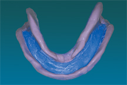
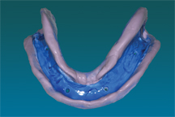
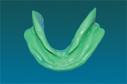

Procedure:
Modeling Plastic/Compound Instructions
VPS Instructions:
- Apply VPS adhesive to one side of the tray on the buccal border . After the adhesive is set, place a bead of VPS heavy bodied impression material on the border of the tray. Place the tray intraorally and perform muscle molding by manipulating the oral muscles to simulate normal function.
- Remove excess material not associated with the border molding from the external and internal tray areas.
- Make corrections for areas with deficient tissue contact and modify the tray if there are areas of over-extension or areas that are too thick. These areas are usually defined by the tray material showing through the border molding material.
- Continue border molding until the entire trays is correctly adapted to the vestibular areas. Move to the contralateral side and border mold the buccal border. Border mold each masseteric notch and retromolar pad area then proceed to capture the retromylohyiod area one-at-a-time finishing with the lingual sulcus. Adhesive is added prior to each VPS addition (Fig 07).

Fig 07
- The retromylohyoid area may need more than one application of border molding material to have sufficient length and bulk to capture the muscle attachments in this area. Having the patient close slightly as the tray is seated and touch the tip of the tongue to the incisive papilla may help.
- Remove any wax spacers or tissue stops, place vent holes through the tray. (Each retromolar pad and every 3cm around the tray)
- Place VPS adhesive on the exposed tray (Fig 08).

Fig 08
- Cover the entire tray, including the border molded areas, with a light bodied VPS impression material. Seat the tray into proper position intraorally and perform border molding movements until the material is polymerized.
- Inspect the impression for voids, pressure spots or other deficiencies and make corrections as needed (Fig 09).

Fig 09
- Disinfect the impression properly before removing it from the clinical area.
|